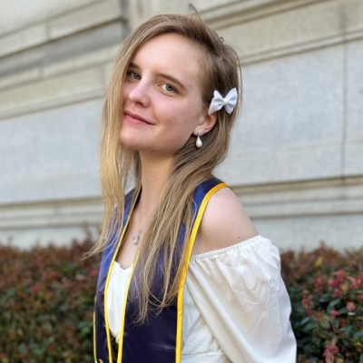
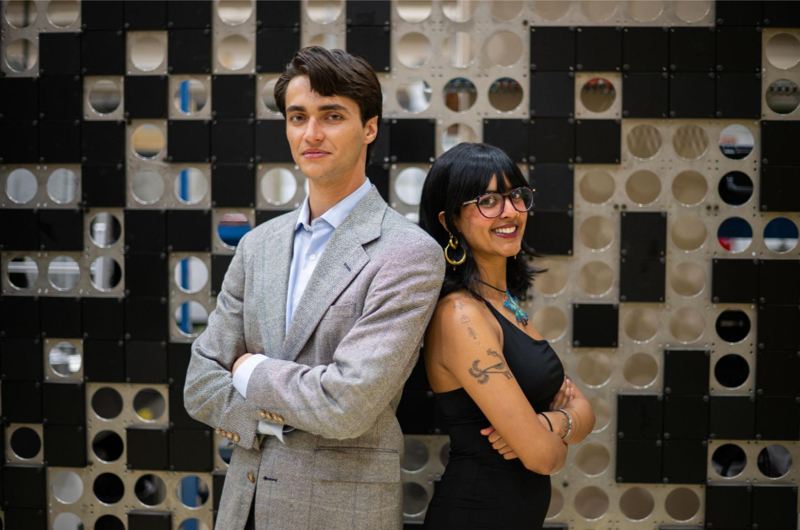

NiCE Club @ UC Berkeley
The Nuclear is Clean Energy Club (NiCE) at UC Berkeley began as a small idea in a very large campus. Founded by Grant Mills (M.S. Nuclear Engineering ‘24), NiCE Club was the first Nuclear is Clean Energy student chapter in the world. In its earliest days, meetings were held in Moffitt Library study rooms and the occasional corner of Etcheverry 4101. There were five officers, a handful of curious members, and a lot of ambition. After its founding year (2022-23), leadership transitioned to Joy Larson (B.S. Nuclear Engineering ‘24), who served as President alongside a small but determined board:
At the time, we could all fit around one study table. Attendance fluctuated. The whiteboard markers were usually drying out. But the conversations were sharp, interdisciplinary, and deeply optimistic about nuclear energy’s role in a decarbonized future.
In the 2024-25 academic year, leadership passed to Krisha Nair and Donny Szeghy (B.S. Nuclear Engineering ‘27). The board doubled in size to ten officers. Meetings grew. Events expanded. We began carving out a visible space for nuclear advocacy on a campus known for big ideas and bigger debates. Today, UC Berkeley’s NiCE Club has grown to eleven officers and four executive officers and a strong, engaged membership base. What began as one student and five future officers in burrowed rooms has become a sustained effort to foster informed dialogue, technical literacy, and thoughtful advocacy around nuclear energy. We remain interdisciplinary at our core: engineers, policy students, environmental scientists, communicators. We believe nuclear belongs in serious climate conversations, and we are committed to making those conversations rigorous, nuanced, and accessible. NiCE Club was built by students who care enough to start small. We’re proud of that.
Grant Mills, Founder of NiCE Club and President 2022-23

Joy Larson, NiCE Club President 2023-24

Krisha Nair and Donny Szeghy, NiCE Club Co-Presidents 2024-25